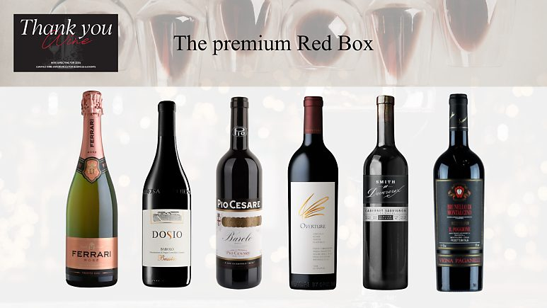
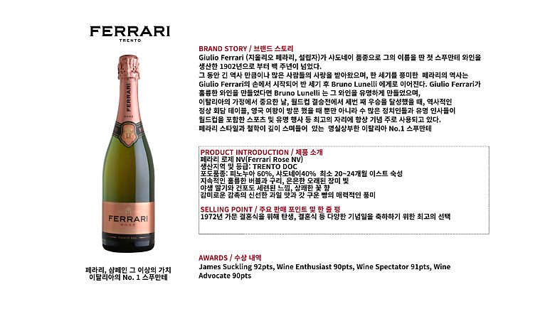
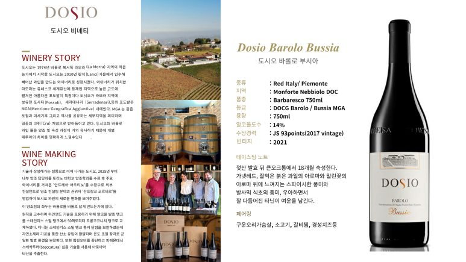
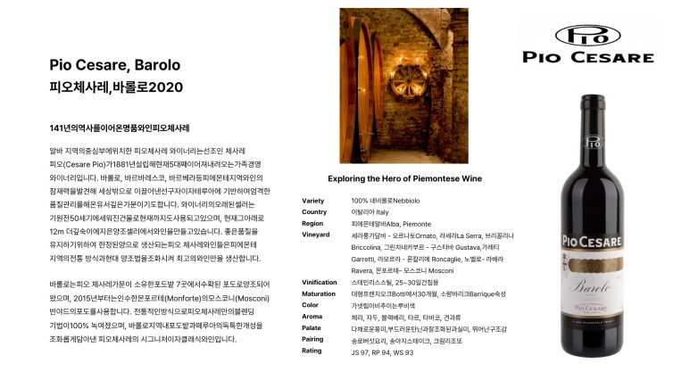
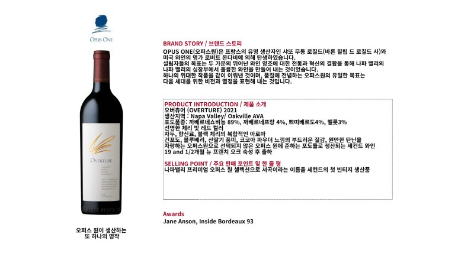
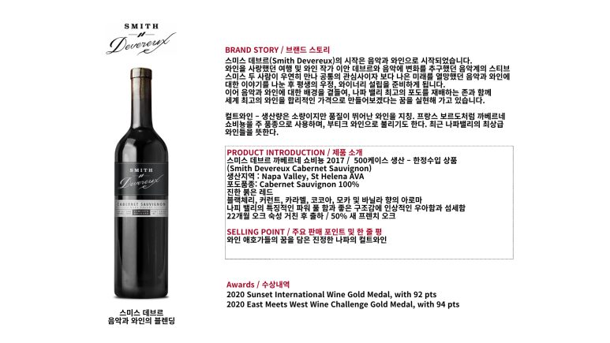
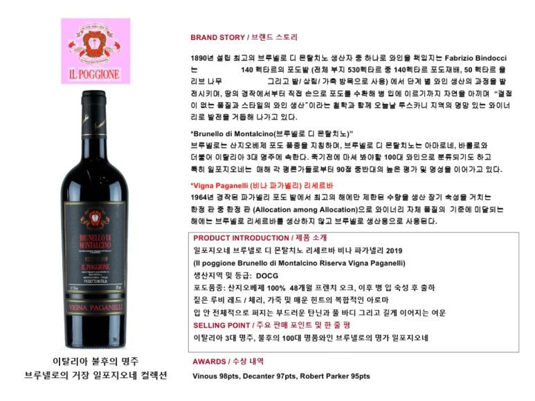

레드와인 러버를 위한 프리미엄 레드 박스
가족 행사를 빛내줄 완벽한 와인 라인업🍷
다가오는 가족 행사를 위해 와인 디렉팅을 의뢰해주신, 평소 진한 레드와인을 즐기시는 손님의 취향을 반영하면서도 모임의 격을 높여줄 특별한 라인업을 구성했습니다. 축하의 시작부터 깊은 여운의 마무리까지, 와인 컨설턴트가 제안하는 가장 맛있게 즐기는 순서와 함께 소개합니다.
다가오는 가족 행사를 위해 와인 디렉팅을 의뢰해주신, 평소 진한 레드와인을 즐기시는 손님의 취향을 반영하면서도 모임의 격을 높여줄 특별한 라인업을 구성했습니다. 축하의 시작부터 깊은 여운의 마무리까지, 와인 컨설턴트가 제안하는 가장 맛있게 즐기는 순서와 함께 소개합니다.

✨ 축하와 건배의 시작 (Sparkling)
가족의 화목과 축하를 나누는 건배주로 이보다 완벽한 선택은 없죠! 특히 평소 진한 레드 와인을 선호하시는 취향을 고려하여, 가벼운 블랑보다는 좀 더 묵직한 바디감과 구조감을 느낄 수 있는 로제로 세심하게 선정했습니다.

🍾 페라리 로제 NV (Ferrari Rose NV)
선정 이유: 이탈리아 No.1 스푸만테이자 '월드컵 우승 축하주'로 유명합니다.
테이스팅: 섬세한 버블과 야생 딸기의 향긋함이 식욕을 돋우며, 로제 특유의 깊이 있는 풍미가 행사의 분위기를 단숨에 화사하고 격조 있게 만들어 줍니다.
🍷 레드와인 5종 : 최적의 시음 순서 (Tasting Order)
1. 우아한 변화와 새로운 시도
레드 와인 대장정의 시작으로 가장 좋습니다. 입안을 정돈해 주는 산미와 말린 꽃향이 뒤에 올 진한 와인들을 더 맛있게 느끼게 해줍니다.

🍷 도시오 바롤로 부시아 2021 (Dosio Barolo Bussia)
특징: '여리하지만 힘 있는' 바롤로의 정수입니다. 유네스코 세계유산으로 지정된 최고의 포도밭 '부시아'에서 생산되었습니다.
테이스팅: 잘 익은 붉은 과일과 말린 꽃 향, 그리고 스파이시한 여운이 우아하게 이어집니다.
부시아의 맛을 풍성하게 즐기기 위해 더블 디켄팅은 선택이 아닌 필수!
2. 전통이 주는 탄탄한 신뢰
바롤로의 전통적인 힘을 느끼기에 충분한 단계입니다. 앞선 우아함에서 시작해 본격적인 묵직함으로 넘어가는 완벽한 징검다리 역할을 해줍니다.

🍷 피오 체사레 바롤로 2020 (Pio Cesare Barolo)
특징: 140년 이상의 역사를 가진 바롤로의 거장, 피오 체사레의 클래식한 스타일을 고스란히 담았습니다.
테이스팅: 탄탄한 구조감과 함께 체리, 자두의 과실미, 부드러운 탄닌이 조화롭게 어우러집니다.
3. 나파 밸리의 명작, 그 화려한 서막
이제 이탈리아를 지나 미국 나파 밸리로 접어듭니다. 실크처럼 매끄러운 탄닌 덕분에 진한 레드를 선호하시는 분들께 최고의 만족감을 주는 서막이 될 것입니다.

🍷 오버츄어 (OVERTURE) by Opus One
특징: 전설적인 '오퍼스 원'의 세컨드 와인으로, 매년 극소량 생산되어 희소성이 매우 높은 나파 밸리의 보석입니다.
테이스팅: 자두와 블랙 체리의 복합적인 아로마, 코코아 파우더 같은 부드러운 질감이 매력적입니다.
4. 압도적인 진함, 컬트 와인의 풍미
이번 구성 중 가장 직관적이고 진한 풍미를 자랑하는 와인입니다. 모임의 분위기가 가장 고조되었을 때, 그 파워풀한 존재감을 확인해 보세요.

🍷 스미스 데브르 까베르네 쇼비뇽 2017 (Smith Devereux)
특징: 500케이스만 한정 생산된 나파 밸리의 컬트 와인으로, 손님의 취향인 '진한 레드'의 정수를 보여줍니다.
테이스팅: 블랙체리, 카카오, 바닐라의 농밀한 풍미와 입안을 가득 채우는 파워풀한 바디감을 자랑합니다.
5. 불후의 명주, 깊은 여운의 대미
오늘의 하이라이트이자 대미를 장식할 와인입니다. 명품 와인이 주는 깊은 숙성의 여운이 가족들과 나누는 대화의 시간을 더욱 풍성하게 마무리해 줄 것입니다.

🍷 일포지오네 브루넬로 디 몬탈치노 리세르바 (Vigna Paganelli)
특징: 이탈리아 3대 명주 BDM 중에서도 최고령 수령의 포도밭에서만 생산되어 48개월의 긴 숙성을 거친 명작입니다.
테이스팅: 깊고 묵직한 바디감 속에 가죽, 담배, 매운 향신료의 힌트가 섞인 압도적인 복합미가 특징입니다.
010-8078-7493 문자 주시면 가장 빠르게 안내해 드립니다.
이 글은 땡큐와인 네이버 블로그에 먼저 올린 글이에요.